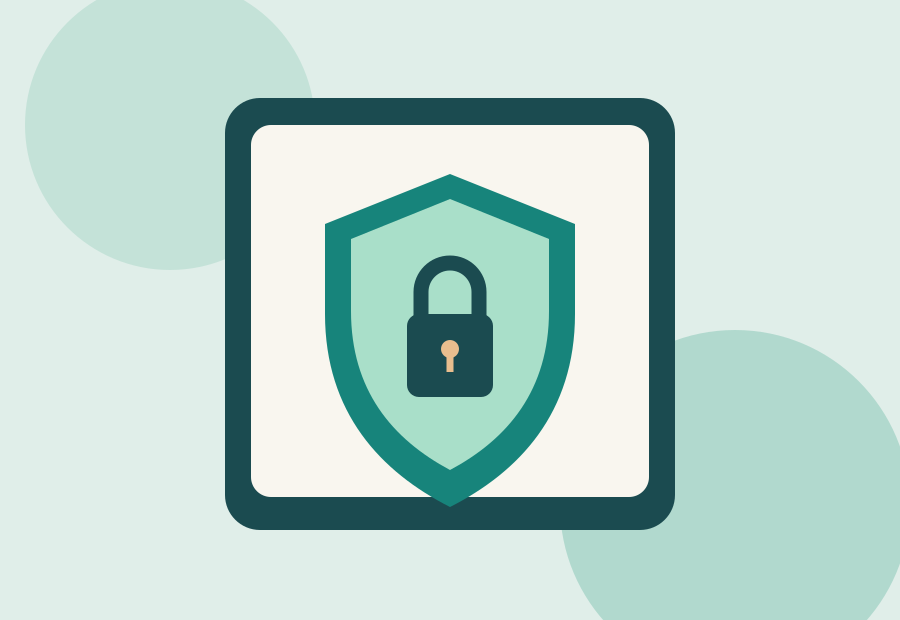

← Volver a todas las entradasSeguridad en línea · 2 de noviembre de 2026
Protege tus cuentas con pequeñas decisiones
La seguridad digital se construye con hábitos cotidianos.

Gran parte de nuestra vida digital depende de cuentas personales. Mantenerlas protegidas no requiere conocimientos avanzados: unas cuantas medidas reducen considerablemente los riesgos más habituales.
Utiliza contraseñas únicas
Evita reutilizar la misma clave en diferentes servicios. Un gestor de contraseñas puede ayudarte a crear y guardar combinaciones largas sin tener que memorizarlas todas.
Activa la verificación en dos pasos
Cuando esté disponible, añade un segundo factor de autenticación. Una aplicación autenticadora o una llave de seguridad ofrecen una protección adicional, incluso si alguien descubre la contraseña.
Comprueba antes de hacer clic
Los mensajes fraudulentos suelen generar prisa: anuncian problemas de acceso o premios inesperados. No facilites datos personales desde un enlace recibido por sorpresa; accede al servicio escribiendo su dirección oficial.
Lista rápida: contraseñas diferentes, segundo factor activado, aplicaciones actualizadas y copias de seguridad periódicas.
La prevención digital empieza con la atención. Adoptar estos hábitos es un paso sencillo hacia una navegación más segura.
Ejemplo: cómo reconocer un correo engañoso
Imagina que recibes un mensaje que dice «Tu cuenta se bloqueará en diez minutos». Antes de actuar, revisa si te pide introducir una contraseña, si contiene un enlace inesperado y si pretende crear urgencia. En lugar de pulsar el enlace, entra en la aplicación oficial para comprobar cualquier aviso.
Protección paso a paso
- Utiliza contraseñas únicas y largas en tus servicios principales.
- Activa la autenticación en dos pasos y conserva los códigos de recuperación.
- Mantén al día el navegador, el sistema operativo y las aplicaciones.
- Haz copias de seguridad de los archivos importantes.
Qué hacer ante un acceso sospechoso
Accede desde la web o aplicación oficial, cambia la contraseña y cierra las sesiones desconocidas si el servicio lo permite. Revisa también los métodos de recuperación. Si esa contraseña se repetía en otros servicios, sustitúyela allí.
Actividad práctica: revisa la configuración de seguridad de tu correo electrónico y comprueba si tienes activada la verificación en dos pasos.